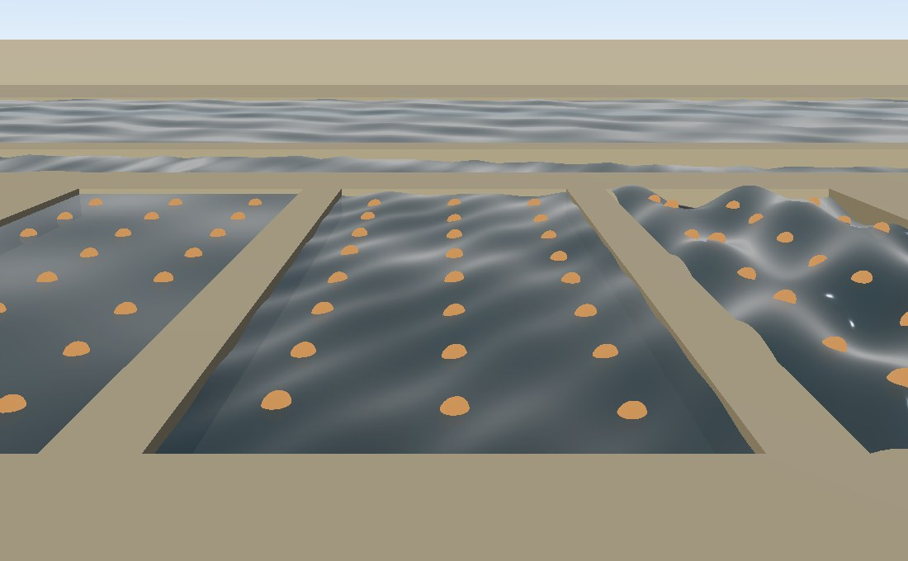

Water is two things that meet at its surface. From
outside it is a surface — a sheet on a lake, a ribbon running
down a river, a wave field you can ask the height of. From inside it is a
medium — what being in it does to the view, to the mix and to
the body. OpenGLContext.scenegraph.water holds both, and they are
independent: a game can have lakes and never put anybody in one, or flood a
level whose water is never drawn.
from OpenGLContext.scenegraph.water import (
STILL, FLOWING, CHOPPY, # how a body of water moves
water_surface, water_ribbon, water_glints, # what it looks like
wave_height, wave_normal, # where the surface is, right now
Volume, Volumes, submerge, # where the water is, and being in it
)
WaterStyleOne dataclass covers the range, and three settings of it are named:
| Field | Unit | STILL | FLOWING | CHOPPY |
|---|---|---|---|---|
amplitude | metres, trough to crest | 0.0 | 0.09 | 0.42 |
wavelength | metres between crests | 11.0 | 4.5 | 7.0 |
speed | metres a second the crests travel | 0.0 | 1.6 | 2.4 |
steepness | how far the normals tilt on top of the displacement | 0.045 | 0.063 | 0.099 |
flow | metres a second the surface drifts, (x, z) | (0, 0) | (1, 0) | (0, 0) |
STILL is a pond: nothing moves, and the ripple is in the light
on it. FLOWING is a river, with small crests travelling
downstream and the surface drifting with them. CHOPPY is weather,
with enough height in it that a shoreline moves. A caller who wants a fourth
writes one — water is a continuum, and the three names are settings rather
than an enumeration.
Where flow is not zero it is also the direction the crests
travel. style.moving() answers whether anything about it changes
with time, which is what a caller advancing the clock only for water that
needs it asks.
The surface is the sum of three crossing sine trains, evaluated from world position and time rather than from a mesh's own coordinates. Two consequences follow, and they are the reason it is built this way:
wave_height(style, x, z, when) and
wave_normal(style, x, z, when) take scalars or numpy arrays and
answer what the surface is doing there — which is what buoyancy, a boat's
waterline or a splash reads.from OpenGLContext.scenegraph.water import CHOPPY, wave_height lift = wave_height(CHOPPY, boat[0], boat[2], when=context.time)
water_surfacemesh = water_surface(x0, x1, z0, z1, level=12.0,
resolution=33, style=CHOPPY, on_gpu=True)
A sheet over a footprint at level. resolution is
how many vertices across it is meshed at: for still water that carries the
ripple in the normals, and for choppy water it is also how much of the wave the
surface can hold — a sheet meshed coarsely against its own wavelength is a flat
sheet with a strange normal, so keep at least a few vertices per
wavelength.
water_ribbonmesh = water_ribbon(course, width=8.0, style=FLOWING, lift=0.15)
course is (N,3) world points — where the water
runs and how high it is there — and width is metres across, either
one number or one per point so a river carrying more is wider further down. A
lake is one flat plane and a river is not, which is why this exists: a sheet at
a level cannot follow a course downhill. The surface lies across the
flow at every point, so a bend is a bend in plan. lift raises
it above the course, for a caller whose course is the bed rather than the
surface.
water_glintsmesh = water_glints(course, width=8.0, spacing=60.0, style=FLOWING)
A river a kilometre away is two pixels wide and mostly hidden by whatever
stands over it; what the eye gets is the surface flashing between the trees.
water_glints spends a handful of quads on that instead of a
tile's whole budget on a line nobody can resolve — this is what a
river's level of detail is.
spacing is how far apart the glints are, in metres, and it is
the LOD dial: wider with distance. Because a coarser tile is also a bigger
tile, a spacing that grows with the tile's geometric error keeps the number of
glints in a tile roughly constant, which makes it a budget rather than a fade.
size is how much of the river's width each one covers. Where they
fall is a function of position along the course rather than a random draw, so a
world baked twice glints in the same places.
on_gpuEvery one of the three takes on_gpu. Left out, the wave is
built into the vertices at time when — right for a still sheet, or
for a caller who wants the mesh to be the surface. Set, the mesh is
built flat and the style is handed to the card:
mesh = water_surface(0, 200, 0, 200, level=0.0, style=CHOPPY, on_gpu=True) ... mesh.wave_time = context.time # once a frame; nothing is re-uploaded
The vertex shader displaces it, so the mesh is uploaded once and a frame costs a handful of uniforms. This is the same arrangement skinning uses for a pose, and the wave is applied in the shadow depth program too, so moving water casts the shadow of the shape it is in.
Build the wave into the vertices or hand it to the card — not both,
or the wave is applied twice. Shape answers the wave uniforms for
every shape it draws, so the hillside beside a lake does not ripple.
A Medium is one substance described from the inside. Three are
in the table, and the numbers are the games' own — nothing in any specification
says how far you can see through slime:
| Name | visibility | muffle | harm |
|---|---|---|---|
water | 9 m | 0.75 | 0 |
slime | 4.5 m | 0.85 | 12 health a second |
lava | 2 m | 0.90 | 32 health a second |
visibility is how many metres it takes the view to close to the
medium's color, and both are linear: the fog
blends in linear HDR before tone mapping, so the colours in the table are much
darker than water looks from above. Water absorbs — it takes the light
out of what you are looking at — where a pale, long-range fog would read as air
with something in it. muffle is how much of the mix's high end
goes, and is never 1: total silence reads as the sound having broken.
register(Medium(...)) adds a substance; a name the table has never
heard of is treated as water rather than as dry air, because whatever it is,
the body is inside something.
from OpenGLContext.scenegraph.water import Volume, Volumes
volumes = Volumes([
Volume.below(minimum=(-40, -40), maximum=(40, 40), level=2.0, depth=30.0),
Volume(minimum=(10, -8, 10), maximum=(14, -4, 14), medium='lava'),
])
volumes.medium_at(point) # 'water', 'lava' or '' for dry air
Boxes in world metres, with the boundary counted as inside so a body exactly
at the waterline is in the water. Where boxes overlap, rule picks
the answer: 'worst' (the default) gives the one that will hurt
most, for a body half in a pool and half in the lava under it;
'smallest' gives the most specific, which is what a world whose
boxes are some partition's own bounds — a BSP leaf, a tile — wants.
from OpenGLContext.scenegraph.water import medium_fog, submerge self.fog = medium_fog() # once, bound into the scene ... name = submerge(self, volumes, self.platform.position) # once a frame
submerge sets the context's fog to what the medium looks like
from inside and the audio engine's whole-mix low-pass to its muffle, then
answers the substance it found so a caller can report it or charge
harm for it. Being under water is not a coloured pane over the
screen: it is a medium with depth in it, so what is in your hands stays clear
while the far wall does not.
Every part is optional. volumes may be None for a
world with no water; a context with no fog is left alone; and a
machine with no sound is never opened just to muffle a silence.
volumes is anything answering medium_at(point), so a
game whose water comes out of a BSP's contents flags passes its own object
rather than converting.

python tests/water_demo.py
— the three named styles side by side over one bed, with a
water_ribbon running across behind them along a course that
loses height from end to end. Each pool carries a grid of floats put on the
surface by wave_height once a frame, which gives the wave field
a scale the eye can measure: over one pool’s footprint
STILL on the left is flat to the millimetre,
FLOWING in the middle spans 0.34 m trough to crest, and
CHOPPY on the right spans 1.58 m.
Every sheet is built with on_gpu=True, so a frame costs four
wave_time writes and nothing is re-uploaded. Press
v to put the camera under the middle pool and h to
print what the surface is doing. Behind the river is a
LAKE: 180 m of open water, meshed by
mesh_across from its own wavelength.A sheet is meshed once across its whole footprint, so a fixed vertex count
cannot be right for both a pond and a lake: the lake samples its own ripple
every few tens of metres, the wave aliases away, and what is left is a flat
plate with a strange normal on it.
mesh_across(side, style) takes the density from the
wavelength instead, capped at MESH_LIMIT because a
sheet is one draw and that is what it costs — in the file of a baked
world as much as in the frame.
Press d in the demo to mesh its lake the way a sheet used to be
and watch the swell go out of it. Both are measured against the wave field
itself, not asserted:
lake 180 m across, meshed from its wavelength: 33 vertices, 1.6 samples per wave, keeps 98% of its swell lake 180 m across, meshed the old way: 9 vertices, 0.4 samples per wave, keeps 47% of its swell
Nine vertices across 180 m is a vertex every 22 m against a 9 m wave — under one sample per wave, and so under the Nyquist limit, where a wave does not merely flatten but returns as a longer one that was never in the water.
MESH_PER_WAVE is four. Two is the Nyquist limit itself: enough
to represent a sine in principle, and in practice whether the vertices land
on the crests or on the zero crossings is down to where the sheet happens to
start. Measured over a 12 m sheet, two samples per wave keep 73% of the
wave and four keep 89%; over 40 m, 84% against 96%. On the sheets where
it matters most the two agree, because both are already held at
MESH_LIMIT. MESH_FLOOR is the other end of it: a
sheet carrying any swell is never meshed coarser than the fixed count this
rule replaced, which was wrong on a lake and right on a pond.
The fine ripple does not live in the mesh at all. It is
waveRipple in the fragment shader, composed as a tilt of
whatever normal the surface already has, so the glitter costs the same at any
density and the mesh only has to carry the swell.
The demo runs with
OPENGLCONTEXT_SHADOWS=0: a GPU-displaced sheet casts its shadow map
from the flat mesh the CPU still holds, so a moved surface shadows itself in
bands.
What an application writes to get a body of water, and to know when something is inside it:
import time
from OpenGLContext.scenegraph.basenodes import Appearance, Shape, sceneGraph
from OpenGLContext.scenegraph.water import (
CHOPPY, Volume, Volumes, medium_fog, submerge, water_surface,
)
# Built once: 80 m square at sea level, meshed 65 x 65, moved by the card.
sheet = water_surface(-40, 40, -40, 40, level=0.0, resolution=65,
style=CHOPPY, on_gpu=True)
lake = Shape(geometry=sheet, appearance=Appearance(material=sheet.material))
scene = sceneGraph(children=[lake, medium_fog()])
# Where the water is, for a body that may end up inside it.
volumes = Volumes([Volume.below(minimum=(-40, -40), maximum=(40, 40),
level=0.0, depth=30.0)])
start = time.monotonic()
def step(context):
"""Once a frame: move the surface, and put the camera in or out of it."""
sheet.wave_time = time.monotonic() - start
return submerge(context, volumes, context.getViewPlatform().position)
The demo’s h key answers the same
wave_height call the floats ride on, at each pool’s centre:
STILL surface at +0.000 m (t=0.05s) FLOWING surface at -0.020 m (t=0.05s) CHOPPY surface at -0.283 m (t=0.05s)
and v reports what submerge found as the camera
crosses the surface:
medium under the camera: water medium under the camera: air
wave_height; what a body does with that belongs to whatever
moves it.